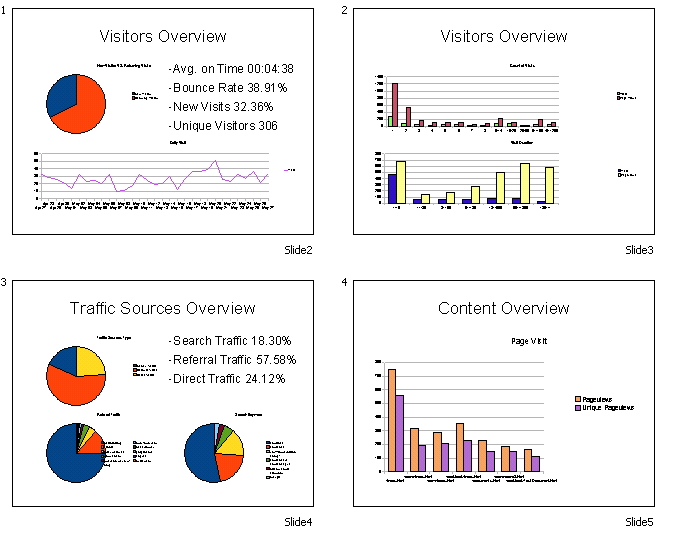

General
Components
Community
Development
TDF
Demos > Create Analysis Report with Charts
Overview
Simple ODF provides Chart API since version 0.6. Chart is a visualized way of data show in electronic document. For ODF document, text document, spreadsheet document and presentation document can embed charts to help describe content. This demo shows the power of chart support in Simple ODF.
In this demo, a web traffic analytics report will be generated in presentation document and text document format. The initial data is stored in a spreadsheet document, which includes visitors, traffic sources and page visit information. These data will be used in charts. Each chart chooses a cell range and uses the values of these cells to draw picture. It's easy and convenient.
No need predefined template, all of the document are generated by Simple ODF API. This demo not only tell you how to use Chart API, but also teach you ro use slide layout to improve presentation design.
This picture shows the generated presentation document.
 This picture shows the generated text document.
Besides, we also supply some codes to show how to create chart in a spreadsheet document. The following picture shows the generated document.

Code Introduction
There code of this demo is very clear. First, we create a presentation document and load the data document. Second, we create cover page and set its content. Thirdly, we add charts to each slide. If you want to add chart to a slide, you must chose a layout which can hold chart. In Simple ODF 0.6, these layouts are "TITLE_PLUS_CHART", "TITLE_PLUS_2_CHART", "TITLE_LEFT_CHART_RIGHT_OUTLINE", "TITLE_PLUS_3_OBJECT", "TITLE_PLUS_4_OBJECT". Different layout can own different count of charts. Please be sure you know that, otherwise chart insert would be failed. For slide, you needn't set the chart size or position, Simple ODF will do it automatically. Finally, the data document is closed and the new created document is saved.
private static void generatePresentationChart() {
try {
PresentationDocument presentationDoc = PresentationDocument.newPresentationDocument();
SpreadsheetDocument spreadsheetDoc = SpreadsheetDocument.loadDocument("demo9_data.ods");
// create cover page
Slide slide = presentationDoc.newSlide(0, "Slide1", SlideLayout.TITLE_SUBTITLE);
setSlideTextContent(slide, "Simple Website Analytics Report", "2011-04-27~2011-05-27");
// create visitors overview page 1
slide = presentationDoc.newSlide(1, "Slide2", SlideLayout.TITLE_PLUS_3_OBJECT);
setSlideTextContent(slide, "Visitors Overview");
Table tableA = spreadsheetDoc.getTableByName("A");
convertFromTableToList(tableA, slide.addList(), 4, 17, 5, 20);
CellRangeAddressList cellRange = CellRangeAddressList.valueOf("A.A1:A.B3");
Chart chart = slide.createChart("New Visitor VS. Returning Visitor", spreadsheetDoc, cellRange, true, true, false, null);
chart.setChartType(ChartType.PIE);
cellRange = CellRangeAddressList.valueOf("A.A6:A.B37");
chart = slide.createChart("Daily Visit", spreadsheetDoc, cellRange, true, true, false, null);
chart.setChartType(ChartType.LINE);
// create visitors overview page 2
slide = presentationDoc.newSlide(2, "Slide3", SlideLayout.TITLE_PLUS_2_CHART);
setSlideTextContent(slide, "Visitors Overview");
cellRange = CellRangeAddressList.valueOf("A.E1:A.G14");
chart = slide.createChart("Count of Visits", spreadsheetDoc, cellRange, true, true, false, null);
chart.setChartType(ChartType.BAR);
cellRange = CellRangeAddressList.valueOf("A.I1:A.K8");
chart = slide.createChart("Visit Duration", spreadsheetDoc, cellRange, true, true, false, null);
// create traffic sources overview page
slide = presentationDoc.newSlide(3, "Slide4", SlideLayout.TITLE_PLUS_4_OBJECT);
setSlideTextContent(slide, "Traffic Sources Overview");
Table tableB = spreadsheetDoc.getTableByName("B");
convertFromTableToList(tableB, slide.addList(), 0, 2, 1, 4);
cellRange = CellRangeAddressList.valueOf("B.A2:B.C5");
chart = slide.createChart("Traffic Sources Type", spreadsheetDoc, cellRange, true, true, false, null);
chart.setChartType(ChartType.PIE);
cellRange = CellRangeAddressList.valueOf("B.A9:B.C19");
chart = slide.createChart("Referral Traffic", spreadsheetDoc, cellRange, true, true, false, null);
chart.setChartType(ChartType.PIE);
cellRange = CellRangeAddressList.valueOf("B.E2:B.G8");
chart = slide.createChart("Search Keyword", spreadsheetDoc, cellRange, true, true, false, null);
chart.setChartType(ChartType.PIE);
// create content overview page
slide = presentationDoc.newSlide(4, "Slide5", SlideLayout.TITLE_PLUS_CHART);
setSlideTextContent(slide, "Content Overview");
cellRange = CellRangeAddressList.valueOf("C.A1:C.C8");
chart = slide.createChart("Page Visit", spreadsheetDoc, cellRange, true, true, false, null);
chart.setChartType(ChartType.BAR);
spreadsheetDoc.close();
presentationDoc.save("demo9p.odp");
presentationDoc.close();
} catch (Exception e) {
e.printStackTrace();
}
}
The following codes show how to generate the text document format report. Different from presentation, you need to set chart size before add it to the document.
private static void generateTextDocument() {
try {
TextDocument textDoc = TextDocument.newTextDocument();
SpreadsheetDocument spreadsheetDoc = SpreadsheetDocument.loadDocument("demo9_data.ods");
// create cover page
textDoc.addParagraph("Simple Website Analytics Report(2011-04-27~2011-05-27)");
textDoc.addParagraph("Visitors Overview");
// create visitors overview page 1
CellRangeAddressList cellRange = CellRangeAddressList.valueOf("A.A1:A.B3");
Rectangle rect = new Rectangle();
rect.width = 14000;
rect.height = 8000;
Chart chart = textDoc.createChart("New Visitor VS. Returning Visitor", spreadsheetDoc, cellRange, true, true, false, rect);
chart.setChartType(ChartType.PIE);
cellRange = CellRangeAddressList.valueOf("A.A6:A.B37");
chart = textDoc.createChart("Daily Visit", spreadsheetDoc,cellRange, true, true, false, rect);
chart.setChartType(ChartType.LINE);
cellRange = CellRangeAddressList.valueOf("A.E1:A.G14");
chart = textDoc.createChart("Count of Visits", spreadsheetDoc, cellRange, true, true, false, rect);
chart.setChartType(ChartType.BAR);
cellRange = CellRangeAddressList.valueOf("A.I1:A.K8");
chart = textDoc.createChart("Visit Duration", spreadsheetDoc, cellRange, true, true, false, rect);
// create traffic sources overview page
textDoc.addParagraph("Traffic Sources Overview");
cellRange = CellRangeAddressList.valueOf("B.A2:B.C5");
chart = textDoc.createChart("Traffic Sources Type", spreadsheetDoc, cellRange, true, true, false, rect);
chart.setChartType(ChartType.PIE);
cellRange = CellRangeAddressList.valueOf("B.A9:B.C19");
chart = textDoc.createChart("Referral Traffic", spreadsheetDoc, cellRange, true, true, false, rect);
chart.setChartType(ChartType.PIE);
cellRange = CellRangeAddressList.valueOf("B.E2:B.G8");
chart = textDoc.createChart("Search Keyword", spreadsheetDoc, cellRange, true, true, false, rect);
chart.setChartType(ChartType.PIE);
// create content overview page
textDoc.addParagraph("Content Overview");
cellRange = CellRangeAddressList.valueOf("C.A1:C.C8");
chart = textDoc.createChart("Page Visit", spreadsheetDoc, cellRange, true, true, false, rect);
chart.setChartType(ChartType.BAR);
spreadsheetDoc.close();
textDoc.save("demo9t.odt");
textDoc.close();
} catch (Exception e) {
e.printStackTrace();
}
}
Lastly, let's have a look at how to add chart to spreadsheet document. It's similar with text and presentation documents. On the other hand, it also has a special feature. You can specify a cell as the position where the chart should be located.
private static void generateSpreadsheetDocument() {
try {
SpreadsheetDocument spreadsheetDoc = SpreadsheetDocument.loadDocument("demo9_data.ods");
// create visitors overview page 1
CellRangeAddressList cellRange = CellRangeAddressList.valueOf("A.A1:A.B3");
Rectangle rect = new Rectangle();
rect.width = 15000;
rect.height = 8000;
Cell positionCell = spreadsheetDoc.getTableByName("B").getCellByPosition("E1");
spreadsheetDoc.createChart("Page Visit", spreadsheetDoc, cellRange, true, true, false, rect, positionCell);
spreadsheetDoc.save("demo9s.ods");
spreadsheetDoc.close();
} catch (Exception e) {
e.printStackTrace();
}
}
Download
Powered by the Simple Java API for ODF version 0.6. You can download the code of this demo from here.